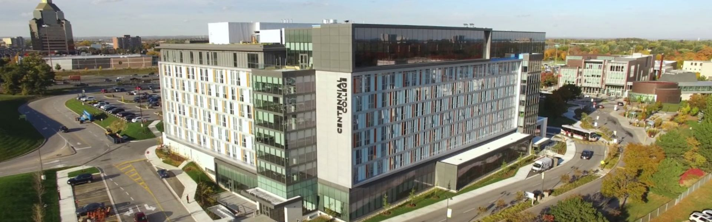

Centennial College
Centennial College of Applied Arts and Technology is a diploma- and degree-granting college in Toronto, Ontario, Canada. It is the oldest publicly funded college in Ontario. its campuses are situated on the east side of the city, particularly in Scarborough, with an aerospace centre at Downsview Park in North York.
| CENTENNIAL COLLEGE | |
|
|
|
| Progress | |
|
|
|
| Morningside | |
|
|
|
| Ashtonbee | |
|
|
|
| Story Arts | |
|
|
|
| Pickering Learning Site | |
|
|
|
| INTAKES | |
|
|
|
| September, January, May | |
|
|
|
| |
|
|
|
|
| Program | Credential | Intake | Campus | Duration |
| Addiction And Mental Health Worker | Diploma | September | Ashtonbee Campus | 2 years |
| Advanced Business Management – Alcoholic Beverages (OPTIONAL Co-Op) | Post – Graduate | September | Progress Campus | 1 year |
| Advanced Television And Film – Script To Screen | Post – Graduate | September | Story Arts Centre | 1 year |
| Advertising – Account Management | Post – Graduate | September | Story Arts Centre | 1 year |
| Advertising – Creative & Digital Strategy | Post – Graduate | September | Story Arts Centre | 1 year |
| Advertising And Marketing Communications Management | Advanced Diploma | September | Story Arts Centre | 3 years |
| Advertising – Media Management | Post – Graduate | September | Story Arts Centre | 1 year |
| Aerospace Manufacturing Engineering Technician | Diploma | January, September | Progress Campus | 2 years |
| Aerospace Manufacturing Engineering Technology | Advanced Diploma | January, September | Progress Campus | 3 years |
| Animation – 3d | Diploma | January, September | Story Arts Centre | 2 years |
| Architectural Technician | Diploma | January, September | Morningside Campus | 2 years |
| Architectural Technology (FAST-TRACK) | Advanced Diploma | September | Morningside Campus | 2 years |
| Architectural Technology (OPTIONAL Co-Op) | Advanced Diploma | January, September | Morningside Campus | 3 years |
| Art And Design Fundamentals | Certificate | January, May, September | Story Arts Centre | 1 year |
| Arts Education And Community Engagement | Post – Graduate | September | Story Arts Centre | 1 year |
| Arts Management | Post – Graduate | September | Story Arts Centre | 1 year |
| Auto Body Repair Technician | Diploma | September | Ashtonbee Campus | 2 years |
| Auto Body Repair Techniques | Certificate | September | Ashtonbee Campus | 1 year |
| Automotive – Motive Power Technician | Diploma | September | Ashtonbee Campus | 2 years |
| Automotive Parts & Service Operations | Diploma | September | Ashtonbee Campus | 2 years |
| Aviation Technician – Aircraft Maintenance | Diploma | September | Ashtonbee Campus | 2 years |
| Aviation Technician – Avionics Maintenance | Diploma | September | Ashtonbee Campus | 2 years |
| Aviation Technology – Aircraft Maintenance & Management | Advanced Diploma | September | Ashtonbee Campus | 3 years |
| Aviation Technology – Avionics Maintenance & Management | Advanced Diploma | September | Ashtonbee Campus | 3 years |
| Bachelor Of Information Technology (COMPUTER And Communication Networks), Honours | Bachelor Degree | September | Progress Campus | 4 years |
| Bachelor Of Public Relations Management, Honours | Bachelor Degree | September | Story Arts Centre | 4 years |
| Bachelor Of Science In Nursing (BSCN) Collaborative Nursing Degree | Bachelor Degree | September | Morningside Campus | 4 years |
| Bachelor Of Science In Nursing (BSCN) Collaborative Nursing Degree | Diploma | September | Morningside Campus | 4 year |
| Baking And Pastry Arts Management | Diploma | January, May, September | Progress Campus | 2 years |
| Baking Skills | Certificate | January, May, September | Progress Campus | 1 year |
| Biomedical Engineering Technology (FAST-TRACK) (OPTIONAL Co-Op) | Advanced Diploma | January, September | Progress Campus | 2 years |
| Biomedical Engineering Technology (OPTIONAL Co-Op) | Advanced Diploma | January, September | Progress Campus | 3 years |
| Biotechnology | Diploma | September | Morningside Campus | 2 years |
| Biotechnology (FAST-TRACK) | Diploma | January, May, September | Morningside Campus | 1 year |
| Biotechnology – Advanced (FAST-TRACK) | Advanced Diploma | January, May, September | Morningside Campus | 2 years |
| Biotechnology – Advanced (OPTIONAL Co-Op) | Advanced Diploma | September | Morningside Campus | 3 years |
| Bookkeeping | Certificate | January, May, September | Progress Campus | 1 year |
| Bridging To University Nursing | Post – Graduate | September | Morningside Campus | 1 year |
| Bridging To University Nursing – Ien | Post – Graduate | September | Morningside Campus | 1 year |
| Broadcasting – Radio, Television, Film & Digital Media | Advanced Diploma | September | Story Arts Centre | 3 year |
| Business | Diploma | January, May, September | Progress Campus | 2 years |
| Business – International Business | Diploma | January, May, September | Progress Campus | 2 years |
| Business – Supply Chain And Operations | Diploma | January, May, September | Progress Campus | 2 years |
| Business Accounting | Diploma | January, May, September | Progress Campus | 2 years |
| Business Administration – Finance | Diploma | January, May, September | Progress Campus | 3 years |
| Business Administration – Leadership And Management (CO-OP) | Advanced Diploma | January, May, September | Progress Campus | 3 years |
| Business Administration – Leadership And Management (OPTIONAL Co-Op) | Advanced Diploma | January, May, September | Progress Campus | 3 years |
| Business Administration – Supply Chain And Operations Management (OPTIONAL Co-Op) | Advanced Diploma | January, May, September | Progress Campus | 3 years |
| Business Administration – Accounting (3 Semesters) | Advanced Diploma | January, May, September | Progress Campus | 1 years |
| Business Administration – Accounting (CO-OP) | Advanced Diploma | January, May, September | Progress Campus | 3 years |
| Business Administration – Accounting (OPTIONAL Co-Op) | Advanced Diploma | January, May, September | Progress Campus | 3 years |
| Business Administration – Human Resources (CO-OP) | Advanced Diploma | January, May, September | Progress Campus | 3 years |
| Business Administration – Human Resources (OPTIONAL Co-Op) | Diploma | January, May, September | Progress Campus | 3 years |
| Business Administration – International Business (CO-OP) | Advanced Diploma | January, May, September | Progress Campus | 3 years |
| Business Administration – International Business (OPTIONAL Co-Op) | Advanced Diploma | January, May, September | Progress Campus | 3 years |
| Business Administration – Marketing (CO-OP) | Advanced Diploma | January, May, September | Progress Campus | 3 years |
| Business Administration – Marketing (OPTIONAL Co-Op) | Advanced Diploma | January, May, September | Progress Campus | 3 years |
| Business Administration – Supply Chain And Operations Management (CO-OP) | Advanced Diploma | January, May, September | Progress Campus | 3 years |
| Business Foundations | Certificate | January, May, September | Progress Campus | 1 year |
| Business – Marketing | Diploma | January, May, September | Progress Campus | 2 years |
| Child And Youth Care | Advanced Diploma | September | Progress Campus | 3 years |
| Children’s Media | Post – Graduate | September | Story Arts Centre | 1 year |
| Communications And Media Fundamentals | Certificate | May, September | Story Arts Centre | 1 year |
| Communications – Professional Writing | Post – Graduate | September | Story Arts Centre | 1 year |
| Community And Child Studies Foundations | Certificate | January, September | Progress Campus | 1 year |
| Community And Justice Services | Diploma | September | Progress Campus | 2 years |
| Community Development Work | Diploma | September | Ashtonbee Campus | 2 years |
| Computer Repair And Maintenance | Certificate | January, September | Progress Campus | 1 year |
| Computer Systems Technician – Networking | Diploma | January, September | Progress Campus | 2 years |
| Computer Systems Technician – Networking (FAST-TRACK) | Diploma | January, September | Progress Campus | 1 year |
| Computer Systems Technology – Networking (FAST-TRACK) (OPTIONAL Co-Op) | Advanced Diploma | January, September | Progress Campus | 2 years |
| Computer Systems Technology – Networking (OPTIONAL Co-Op) | Advanced Diploma | January, September | Progress Campus | 3 years |
| Construction Management | Post – Graduate | January, September | Morningside Campus | 1 year |
| Contemporary Journalism | Post – Graduate | September | Story Arts Centre | 1 year |
| Court Support Services | Certificate | January, September | Progress Campus | 1 year |
| Culinary Management | Diploma | January, May, September | Progress Campus | 2 years |
| Culinary Skills | Certificate | January, May, September | Progress Campus | 1 year |
| Cybersecurity | Post – Graduate | September | Progress Campus | 1 year |
| Dance – Performance | Diploma | September | Story Arts Centre | 2 years |
| Developmental Services Worker | Diploma | September | Ashtonbee Campus | 2 years |
| Digital Visual Effects | Diploma | September | Story Arts Centre | 2 years |
| Early Childhood Education (ASHTONBEE Campus) | Diploma | September | Ashtonbee Campus | 2 years |
| Early Childhood Education (PROGRESS Campus) | Diploma | January, September | Progress Campus | 2 years |
| Electrician: Construction And Maintenance – Electrical Engineering Technician | Diploma | September | Progress Campus | 2 years |
| Electronics Engineering Technician | Diploma | January, September | Progress Campus | 2 years |
| Electronics Engineering Technician (FAST-TRACK) | Diploma | January, September | Progress Campus | 1 year |
| Electronics Engineering Technology (FAST-TRACK) (OPTIONAL Co-Op) | Advanced Diploma | January, September | Progress Campus | 2 years |
| Electronics Engineering Technology (OPTIONAL Co-Op) | Advanced Diploma | January, September | Progress Campus | 3 years |
| Environmental Technician | Diploma | September | Morningside Campus | 2 years |
| Environmental Technician (FAST-TRACK) | Diploma | September | Morningside Campus | 1 year |
| Environmental Technology (CO-OP) | Advanced Diploma | September | Morningside Campus | 3 years |
| Environmental Technology (CO-OP) (FAST-TRACK) | Advanced Diploma | September | Morningside Campus | 2 years |
| Environmental Technology (FAST-TRACK) (OPTIONAL Co-Op) | Advanced Diploma | September | Morningside Campus | 2 years |
| Environmental Technology (OPTIONAL Co-Op) | Advanced Diploma | September | Morningside Campus | 3 years |
| Esthetician | Diploma | September | Morningside Campus | 2 years |
| Event Management | Post – Graduate | January, September | Progress Campus | 1 year |
| Fashion Business And Management | Diploma | September | Progress Campus | 2 years |
| Financial And Client Services | Diploma | January, May, September | Progress Campus | 1 year |
| Financial Services | Diploma | January, May, September | Progress Campus | 2 years |
| Fine Arts Studio | Diploma | September | Story Arts Centre | 2 years |
| Fitness And Health Promotion | Diploma | September | Progress Campus | 2 years |
| Food And Beverage Management | Diploma | January, May, September | Progress Campus | 2 years |
| Food Media | Certificate | September | Progress Campus | 1 year |
| Food Science Technology (FAST Track) (OPTIONAL Co-Op) | Advanced Diploma | January, September | Morningside Campus | 2 years |
| Food Science Technology (OPTIONAL Co-Op) | Certificate | September | Morningside Campus | 3 years |
| Food Tourism | Diploma | September | Progress Campus | 1 year |
| Game – Art | Diploma | September | Story Arts Centre | 2 years |
| Game – Development | Advanced Diploma | September | Story Arts Centre | 3 years |
| Game – Programming (FAST Track) (OPTIONAL Co-Op) | Advanced Diploma | January, September | Progress Campus | 2 years |
| Game – Programming (OPTIONAL Co-Op) | Advanced Diploma | January, September | Progress Campus | 3 years |
| General Arts | Certificate | September | Morningside Campus | 1 year |
| General Arts And Science – English For Academic Purposes | Certificate | January, May, September | Ashtonbee Campus | 1 year |
| Global Business Management | Post – Graduate | January, May, September | Progress Campus | 2 years |
| Graphic Design | Advanced Diploma | September | Story Arts Centre | 3 years |
| Health Informatics Technology (FAST-TRACK) (OPTIONAL Co-Op) | Advanced Diploma | January, September | Progress Campus | 2 years |
| Health Informatics Technology (OPTIONAL Co-Op) | Advanced Diploma | January, September | Progress Campus | 3 years |
| Health Studies And Communications Skills | Certificate | January, September | Morningside Campus | 1 year |
| Healthcare Environmental Services Management | Diploma | September | Morningside Campus | 2 years |
| Heating, Refrigeration And Air Conditioning Technician | Diploma | January, September | Progress Campus | 2 years |
| Hospitality – Hotel Operations Management | Diploma | January, May, September | Progress Campus | 2 years |
| Hospitality And Tourism Administration | Advanced Diploma | September | Progress Campus | 1 years |
| Hospitality Foundations | Certificate | January, May, September | Progress Campus | 1 year |
| Hotel, Resort And Restaurant Management | Post – Graduate | January, September | Progress Campus | 1 year |
| Human Resources Management (OPTIONAL Co-Op) | Post – Graduate | January, May, September | Progress Campus | 1 year |
| Insurance Management | Post – Graduate | September | Progress Campus | 1 year |
| Interactive Media Management | Post – Graduate | January, September | Story Arts Centre | 1 year |
| International Business Management | Post – Graduate | January, May, September | Progress Campus | 1 year |
| International Business Management – Transnational | Post – Graduate | September | International | 1 year |
| International Development | Post – Graduate | January, September | Progress Campus | 1 year |
| Journalism | Advanced Diploma | September | Story Arts Centre | 3 years |
| Law Clerk | Diploma | January, September | Progress Campus | 2 years |
| Liberal Arts | Diploma | September | Morningside Campus | 2 year |
| Liberal Arts To York University | Diploma | September | Morningside Campus | 2 years |
| Lifestyle Media | Post – Graduate | September | Story Arts Centre | 1 year |
| Marketing – Corporate Account Management (OPTIONAL Co-Op) | Post – Graduate | January, September | Progress Campus | 1 year |
| Marketing – Digital Engagement Strategy (OPTIONAL Co-Op) | Post – Graduate | September | Eglinton Learning Site | 1 year |
| Marketing – Research & Analytics (OPTIONAL Co-Op) | Post – Graduate | January, May, September | Progress Campus | 1 year |
| Marketing Management | Post – Graduate | January, May, September | Progress Campus | 1 year |
| Massage Therapy | Advanced Diploma | September | Morningside Campus | 3 years |
| Massage Therapy – Compressed | Advanced Diploma | January | Morningside Campus | 2 years |
| Mechanical Engineering Technician – Design | Diploma | January, September | Progress Campus | 2 year |
| Mechanical Engineering Technician – Design (FAST-TRACK) | Diploma | January, September | Progress Campus | 1 year |
| Mechanical Engineering Technology – Design (FAST Track) (OPTIONAL Co-Op) | Advanced Diploma | January, May, September | Progress Campus | 2 years |
| Medical Laboratory Technician | Certificate | January, September | Morningside Campus | 1 year |
| Mobile Applications Development | Post – Graduate | September | Progress Campus | 1 year |
| Motive Power – Heavy Duty Equipment Technician | Diploma | September | Ashtonbee Campus | 2 years |
| Motive Power – Truck And Coach Technician | Diploma | September | Ashtonbee Campus | 2 years |
| Motorcycle And Powersports Product Repair Techniques | Certificate | September | Ashtonbee Campus | 1 year |
| Museum And Cultural Management | Post – Graduate | September | Story Arts Centre | 1 year |
| Music Industry Arts And Performance | Advanced Diploma | September | Story Arts Centre | 3 years |
| Nutrition And Food Service Management | Diploma | January, September | Morningside Campus | 2 years |
| Occupational Therapist Assistant & Physiotherapist Assistant | Diploma | September | Morningside Campus | 2 years |
| Office Administration – Executive | Diploma | January, September | Progress Campus | 2 years |
| Office Administration – General | Certificate | January, September | Progress Campus | 1 year |
| Office Administration – Health Services | Diploma | January, September | Progress Campus | 2 years |
| Office Administration – Legal | Diploma | January, September | Progress Campus | 2 years |
| Paralegal | Post – Graduate | January, September | Progress Campus | 1 year |
| Paramedic | Diploma | September | Morningside Campus | 2 years |
| Performing Arts Fundamentals | Certificate | September | Story Arts Centre | 1 year |
| Personal Support Worker | Certificate | January, September | Morningside Campus | 1 year |
| Pharmacy Technician | Certificate | January, September | Morningside Campus | 2 years |
| Photography | Diploma | September | Story Arts Centre | 2 year |
| Police Foundations | Diploma | January, September | Progress Campus | 2 years |
| Practical Nursing | Diploma | January, September | Morningside Campus | 2 years |
| Practical Nursing For Internationally Educated Nurses | Diploma | January, September | Morningside Campus | 1 year |
| Pre-Business (BUSINESS Studies) | Certificate | January, May, September | Progress Campus | 1 year |
| Pre-Health Sciences Pathway To Certificates And Diplomas | Certificate | September | Ashtonbee Campus | 1 year |
| Pre-Service Firefighter Education And Training | Certificate | September | Progress Campus | 1 year |
| Product Design And Development | Advanced Diploma | September | Story Arts Centre | 3 year |
| Project Management | Certificate | January, May, September | Progress Campus | 1 year |
| Project Management (PICKERING Learning Site) | Certificate | January, May, September | Pickering Learning Site | 1 year |
| Public Relations – Corporate Communications | Certificate | January, September | Story Arts Centre | 1 year |
| Publishing – Book, Magazine And Electronic | Certificate | September | Story Arts Centre | 1 year |
| Recreation And Leisure Services | Diploma | September | Progress Campus | 2 years |
| Refrigeration And Air Conditioning Mechanic – Heating, Refrigeration And Air Conditioning Technician | Diploma | September | Progress Campus | 2 years |
| Social Service Worker | Diploma | January, September | Ashtonbee Campus | 2 years |
| Software Engineering Technician | Diploma | January, September | Progress Campus | 2 years |
| Software Engineering Technician (FAST-TRACK) | Diploma | January, September | Progress Campus | 1 year |
| Software Engineering Technology (FAST-TRACK) (OPTIONAL Co-Op) | Advanced Diploma | January, September | Progress Campus | 2 years |
| Software Engineering Technology (OPTIONAL Co-Op) | Advanced Diploma | January, September | Progress Campus | 3 years |
| Special Event Planning | Diploma | January, May, September | Progress Campus | 2 years |
| Sports Journalism | Post – Graduate | January | Story Arts Centre | 1 year |
| Strategic Management | Post – Graduate | January, September | Progress Campus | 1 year |
| Strategic Management – Accounting | Post – Graduate | January, May, September | Progress Campus | 1 year |
| Supply Chain Management – Logistics | Post – Graduate | September | Progress Campus | 1 year |
| Technology Foundations (ICET) | Certificate | January, September | Progress Campus | 1 year |
| Television & Film – Business | Post – Graduate | September | Story Arts Centre | 1 year |
| Theatre Arts And Performance | Advanced Diploma | September | Story Arts Centre | 3 year |
| Tourism – Travel Services Management | Advanced Diploma | January, September | Progress Campus | 1 years |
| Trades Foundations – Motive Power | Certificate | September | Ashtonbee Campus | 1 year |
| Truck And Coach Technician Ats Map 32 | Certificate | September | Ashtonbee Campus | 1 year |
| Truck And Coach Technician – Mack/Volvo Map 32 | Certificate | September | Ashtonbee Campus | 1 year |
| Workplace Wellness And Health Promotion (MORNINGSIDE Campus) | Post – Graduate | September | Morningside Campus | 1 year |
| Workplace Wellness And Health Promotion (PICKERING Learning Site) | Post – Graduate | September | Pickering Learning Site | 1 year |